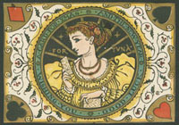

Issue 4 - April 2007
Rethinking Victorian Sentimentality

George Cattermole, At Rest (Little's Nell's Deathbed), 9.53 x 11.43 cm, wood-engraving,
The Old Curiosity Shop, ch. 71, 30 January 1841, plate 73 in serial publication.
Introduction
Crying Over Little Nell
Nicola Bown
Do you ever find yourself coming over all sentimental? And if you do, do you like it, or do you feel embarrassed by your sentimental proclivities? Is sentimentality a pleasurable indulgence, a minor vice, or a lapse of aesthetic and moral taste? That Victorian culture is steeped in sentimentality is axiomatic. Its cast of pathetic children, fallen women, faithful animals, lachrymose deathbeds, hopeless sunsets and false dawns, fated quests, angelic mothers and innocents betrayed – to name only the most obvious topoi of literary and visual sentimentality – is familiar to the point of parody. (Or perhaps, thinking of Wilde's witticism on the death of Little Nell, it is beyond parody already.) The taste for Victorian culture's sentimentality, like the taste for Victorian culture more generally, has waxed and waned, yet whereas a fascination for kitsch or a delight in melodrama's excesses can sit happily with serious scholarly interests, it has rarely been respectable to stand up for sentimentality. Sentimentality is excessive feeling evoked by unworthy objects; it is falsely idealising; it simplifies and sanitises; it is vulgar; it leads to cynicism; it is feeling on the cheap; it's predictable; it's meretricious. In short, it's an emotional and aesthetic blot on the landscape.
Introduction continued ...
Download full text (This requires Acrobat - Download free copy here)

Bob Cratchit and Tiny Tim from A Muppet Christmas Carol |
Feeling Dickensian feeling
Emma Mason ‘Feeling Dickensian feeling' asks why modern literary criticism, notably that inflected by new historicism, is so intent on stripping sentimentalism of its sentimental feeling. The essay suggests that the reader encounters experiential problems when feelings are separated from critical practice and also outlines the specific issues at stake when critics translate immaterial subjects, like feeling or belief, into external, material events. Thus Dickensian sentiment is often critically analysed for its historical content despite the emotional pleasure many readers purport to enjoy in experiencing its expression. I suggest that Dickens's ‘A Christmas Carol' (1842) embodies some of these tensions by presenting Ebenezer Scrooge as a cautionary figure who begins by quantifying the world and ends by feeling it. I also build on modernity's aversion to feeling through the work of Wendy Wheeler and Teresa Brennan to forward a model of reading for feeling. This model, I argue, works through a sense-based form of close reading that privileges specificity and particularity in the reading process, both of words and sentences but also of readers' responses.
Download full text (This requires Acrobat - Download free copy here) |

Illustration from 'The Complete Poetical Works of Henry Wadsworth Longfellow with numerous illustrations.' Boston: Houghton, Mifflin and Company; James R. Osgood and Company, 1880. p. 95. |
‘Thousands of throbbing hearts'
Sentimentality and community in popular Victorian poetry: Longfellow's Evangeline and Tennyson's Enoch Arden .
Kirstie Blair
This article explores the function of sentimentality in popular nineteenth-century narrative poetry by focusing on Tennyson's Enoch Arden and Longfellow's Evangeline , two poems that have suffered relative critical neglect due to their status as sentimental verse. It argues that both texts, in their stories of exile, alienation and eventual recuperation, set up their hero and heroine as role-models for ways of feeling and use them to examine the possibility of using personal feeling as a conduit for communal sentiment. While both poems deploy the standard tropes of Victorian sentimentality, the ambiguous conclusions of Enoch Arden and Evangeline , I argue, call into question the clichés of sentimental discourse. The fates of Enoch and of Evangeline offer, to some extent, a darker vision of the potential for sentimental responses to an individual's suffering to create feeling communities either within or without the poem.
Download full text (This requires Acrobat - Download free copy here) |

George Cruikshank, Illustration for Oliver Twist |
"Don't be so melodramatic!" Dickens and the affective mode
Sally Ledger
Beginning with Martin Meisel's account of theatrical and fictional
tableaux as 'effects', this essay explores Dickens's staging of
sentimental affect both in his performed readings of his fiction and in
the works of fiction themselves. Initially focusing on a private reading
of The Chimes in 1843, captured in an illustration by Daniel Maclise,
and at which a number of his friends and colleagues openly wept, the
essay moves on to give an account of Dickens's instrumental manipulation
of sentimental affect in scenes from Oliver Twist, 'A Christmas Carol'
and Bleak House. The essay argues, firstly, that in carefully staging
self-reflexive sentimental tableaux, Dickens creates a species of
'alienation effect' that reinforces the affective power of the scenes.
Secondly it contends that what Dickens was aiming for was less a
representational realism that a realism of affect; and thirdly that he
simultaneously engaged with and interroged the melodramatic mode in his
later works of fiction leading, in Bleak House, to a cross-class
account of women's oppression.
Download full text (This requires Acrobat - Download free copy here) |

Richard Doyle, Chirp the Second, 1843, Wood engraving for Dickens's The Cricket on the Hearth |
Sentiment and Vision in Charles Dickens's A Christmas Carol and The Cricket on the Hearth
Heather Tilley This essay explores the ways in which sentimentality is manifested through the visible, and through associative functions of the eye, in two of Dickens's Christmas books of the 1840s. I situate the relationship between vision and sentiment within discourses from eighteenth-century moral philosophy, as Adam Smith's figure of the “Impartial Spectator” (of central importance to the development of ideas around sympathy) is constructed mainly through the visual. I focus on two of the Christmas Books as they offer an interesting local study to test these ideas, coming at a critical juncture within the development of Dickens's own writing style, and also at an important historical moment within an investigation into Victorian sentimentality.
Within Dickens's writing, sentimentality is typically associated with the exaggerated emotional portrayal of pathetic scenes (particularly the deaths of children), designed to elicit emotional responses from the reader. However, behind the hyperbole rests a concern with the self's need to take social, ethical and moral care of others, and the role of literature and art in tutoring the reader's emotional response, with the eye playing a crucial role in this act. I further explore the way in which Dickens's interest in blindness both reinforces, and points to certain disturbances, in his sentimental vision.
Download full text (This requires Acrobat - Download free copy here) |

Emily Farmer (1826-1905), In Doubt , 1881, watercolour, 1905, Victorian and Albert Museum. |
Selling Sentiment: The Commodification of Emotion in Victorian Visual Culture
Sonia Solicari
This essay argues that the Victorian sentimental impulse was motivated by the sharing of emotion and the dynamics of communal and interactive feeling. Integral to the popularity of sentiment was its recognition factor by means of established tropes and conventions. Arguably, the same familiarity that made narrative art accessible also made advertising successful and many of the same motifs ran from exhibition watercolours to book illustration to posters. Works of sentiment operated as emotional souvenirs so that material proof of feeling could be easily digested, displayed and revisited. The essay looks closer at the investment of emotion in ephemeral images, such as music-sheet covers, and the ways in which forms of feeling were standardised and reproduced in keeping with a new art-buying public and the possibilities of wider image dissemination. Focusing upon issues raised during the curation of a current exhibition at the Victoria and Albert Museum ( A Show of Emotion: Victorian Sentiment in Prints and Drawings, 7 Dec 2006 – 10 Sep 2007) this essay explores the ways in which the sentimental pervaded nineteenth-century visual culture and how, in the cut-throat commercial world of image production, sentiment became manifest and identifiable if only as a notional phenomenon.
Download full text (This requires Acrobat - Download free copy here) |

Portrait of Samuel Johnson |
From Sentiment to Sentimentality: A Nineteenth Century
lexicographical
Search
Marie Banfield The brief account of the lexicographical history of the word ‘sentiment' in the nineteenth century, and the table of definitions which follows it, grew from my increasing sense of the shifting and ambivalent nature of the term in the literature of the period, despite the resonance and the proverbial solidity of phrases such as ‘Victorian sentiment' and ‘Victorian sentimentality'. The table is self explanatory, representing the findings of a search, among a wide range of nineteenth-century dictionaries over the period, for the changing meanings accrued by the word ‘sentiment' over time, its extensions and its modifications. The nineteenth-century lexicographical history of the word ‘sentiment' has its chief roots in the Eighteenth-century enlightenment, with definitions from Samuel Johnson and quotations from John Locke, chiefly based on intellect and reason. The nineteenth-century generated a number of derivatives of the word over a period of time to express altered modes of feeling, thought and moral concern. The history of the word ‘sentiment' offers a psychological as well as a linguistic narrative.
Download full text (This requires Acrobat - Download free copy here) |

Frederick Walker (1840-1875), Autumn , 1865, watercolour, Victorian and Albert Museum |
A Show of Emotion: Victorian Sentiment in Prints & Drawings
Temporary display in rooms 88a and the Julie and Robert Breckman Prints & Drawings Gallery, Room 90. Victoria and Albert Museum.
Curated by Sonia Solicari and Catherine Flood
7 December 2006 - 10 September 2007. Admission Free
For further information please click here
A Show of Emotion - recital of popular Victorian poetry and song
Sun 27 May
Julie and Robert Breckman Prints and Drawings Gallery, Room 90 and
Paintings, Room 88A
2-5 pm
Experience the imagery and rhythms of nineteenth century poetry as it
would have been read aloud in the Victorian parlour. A theatrical
reading of the sentimental verses and tear-jerking lyrics that
enthralled the Victorian public and inspired many of the prints and
drawings currently on display in these galleries. The recital will be
given twice, divided by a gallery talk by Catherine Flood . |

Francis Chantrey, The Sleeping Children, 1817, marble sculpture, Litchfield Cathedral
|
Notes on Contributors |

Print by Marcus Ward & Company, London, 1867
|
Linking to the nineteenth century
We've trawled the web and found some of the best, most interesting and downright weird materials from and about the long nineteenth century. In each issue we will be adding to our archive of links. Check them out here...
|
|
|